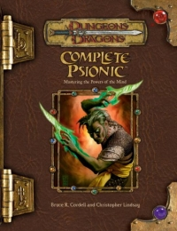

“Complete Psionic” on the
Shelf of Many Books

Complete Psionic: Mastering the Powers of the Mind
D&D 3.5
(3e)
Year
: 2006 (April)
Complete Psionic
on Amazon
Complete Psionic
on TSR Info
Known monsters from the book:
Agile Loper
Alabaster Aerial
Amber Tunneler
Anathemic Carapace
Arctine Elemental Steward
Astral Aquan
Astral Construct
Ebony Stinger
Ectoplasmic Swarm
Emberling Elemental Steward
Emerald Gyre
Geodite Elemental Steward
Iridescent Serpent
Larval Flayer
Shadow Fet
Sibyllic Guardian
Spectral Savant
Tempestan Elemental Steward